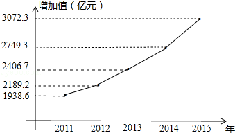

2016年北京市中考数学试题 · 数学解答题 第24题 · 对应解析
24．（5分）（2016•北京）阅读下列材料：
北京市正围绕着“政治中心、文化中心、国际交往中心、科技创新中心”的定位，深入实施“人文北京、科技北京、绿色北京”的发展战略．“十二五”期间，北京市文化创意产业展现了良好的发展基础和巨大的发展潜力，已经成为首都经济增长的支柱产业．
2011年，北京市文化创意产业实现增加值1938.6亿元，占地区生产总值的12.2%．2012年，北京市文化创意产业继续呈现平稳发展态势，实现产业增加值2189.2亿元，占地区生产总值的12.3%，是第三产业中仅次于金融业、批发和零售业的第三大支柱产业．2013年，北京市文化产业实现增加值2406.7亿元，比上年增长9.1%，文化创意产业作为北京市支柱产业已经排到了第二位．2014年，北京市文化创意产业实现增加值2749.3亿元，占地区生产总值的13.1%，创历史新高，2015年，北京市文化创意产业发展总体平稳，实现产业增加值3072.3亿元，占地区生产总值的13.4%．
根据以上材料解答下列问题：
（1）用折线图将2011﹣2015年北京市文化创意产业实现增加值表示出来，并在图中标明相应数据；
（2）根据绘制的折线图中提供的信息，预估2016年北京市文化创意产业实现增加值约 3471.7 亿元，你的预估理由 用近3年的平均增长率估计2016年的增长率 ．
【解答】解：（1）2011﹣2015年北京市文化创意产业实现增加值如图所示，

（2）设2013到2015的平均增长率为x，
则2406.7（1+x）2=3072.3，
解得x≈13%，
用近3年的平均增长率估计2016年的增长率，
∴2016年的增长率为3072.3×（1+13%）≈3471.7亿元．
故答案分别为3471.7，用近3年的平均增长率估计2016年的增长率．